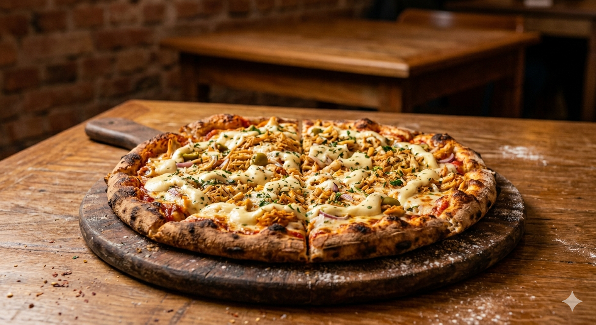

Seu site de notícias e curiosidades de pizzas favorito.
História das pizzas

Descubra a história patriótica e deliciosa por trás da pizza mais famosa do planeta, um clássico que une simplicidade, cores e a realeza italiana em uma única fatia.
Saiba mais
Conheça a trajetória da combinação que dividiu puristas e conquistou o estômago dos brasileiros, transformando um queijo cremoso no maior patrimônio das nossas pizzarias.
Saiba mais